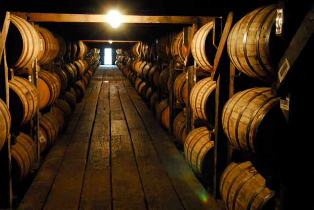
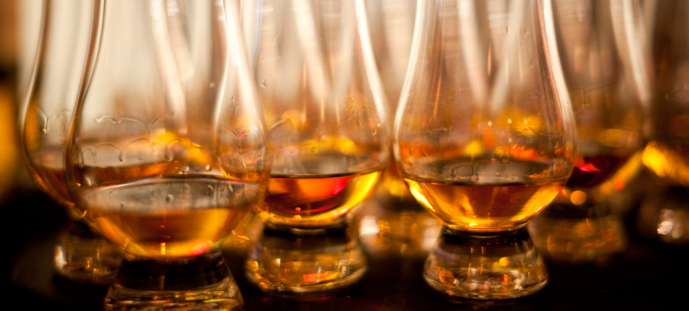
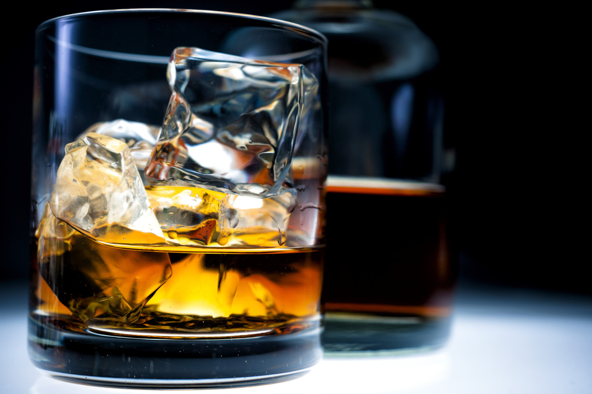

История и видове на уискито
 Уискито е вид силно спиртно (алкохолно) питие, което се получава от пшеница, ръж или ечемик. Понякога към уискито се причислява и бърбънът, който се вари от царевица. Подобно на всеки висококачествен алкохолен продукт уискито има своята култура и своите големи имена. Съществуват толкова много видове уиски, че бихме могли да опитваме по едно през всеки ден от годината. Ирландско, шотландско или американско, уискито – този алкохол за крале, разкрива тайните си само на истински посветените. Противниците му го упрекват, че имало вкус на смачкани дървеници (дали са ги опитвали?). Но за ценителите няма нищо по-възвишено и по-истинско от едно добро уиски. Нищо, че се прави от възможно най-баналните суровини – вода и ечемик. А появата на нов тип консуматори е в услуга на възхода му. Днес уискито се дегустира заради самото него, а не под въздействието на някакви модни импулси. Whisky“ е английско изопачаване на древното наименование на тази спиртна напитка, която на келтски език (използван в Шотландия и Ирландия) се наричала „uisge beatha“ или „usquebaugh“ – означава „вода на живота“. На англичаните това звучало като „uishgi“, докато накрая думата станала „whisky“. „Scotch“ означава, че уискито е дестилирано и отлежало в Шотландия (Scotland) и е запазена марка в целият свят. Само шотландското уиски може да има на етикета си думата „scotch“. „Irish“ етикетът означава, че уискито е дестилирано и отлежало в Ирландия (Ireland). Думите „Malt Whisky“ показват, че материалът за производството е само ечемичен малц. Така се произвежда превъзходно уиски, смятано от специалистите за по-добро от обикновеното зърнено уиски, което е съставна част от „Blend Whisky“. Въпреки това има някои много качествени видове зърнено уиски. Американското чисто уиски тип „Straight Bourbon“ се произвежда от малцова каша с поне 51% съдържание на царевица (обикновено около 70%), както е според американското законодателство. Останалите количества в производствената каша се допълват от пшеница и/или ръж и ечемичена смес.  „Бърбънът“ се произвежда от 51% царевична каша, чистото ръжено уиски се произвежда от 51% ръжена каша. Наименованието Bourbon произлиза от името на областта Бърбън Каунти, щата Кентъки. Американските уискита отлежават в нови бъчви от бял американски дъб, които се опушват преди употреба. Отлежаването обикновено трае 2 години, което не е законовото изискване за отлежаване на обикновения бърбън, но е минимален срок на отлежаване на стрейт-бърбъна според американските закони. На практика обаче бърбънът отлежава не по-малко от 4 години. Познато е и наименованието „Sour Mash“, с което се обозначава американското уиски със солен или леко кисел привкус (в превод „Кисела малцова каша“). В същност това идва от използването на киселина в контролирането на процеса на създаване на уиски. Тя контролира развитието на бактерии, които могат да увредят питието. Освен това се постига подобряване на консистенцията и качеството на напитката. „Mash“ е кашата от гореща вода и зърно – изходна суровина за уискито. Същността на процеса Sour Mash е добавянето към новодобитата зърнена каша, която веднъж вече е влизала в производство на уиски, отделена от напитката след нейното ферментиране. От тази каша произлиза и киселината. „Malt“ всъщност е покълнал във вода ечемик, който след това се изсушава на пещ. Малцовият процес превръща скорбялата в зърната в разтвор, съдържащ захарна малтоза, и така прави ферментирането възможно. Изсушаването на малца в пещта спира растежа на ечемичените кълнове, а торфът, използван за гориво на пещта, придава аромат на опушено на малца. „Grain Whisky“ за разлика от малцовото уиски е проезведено от ечемичени, житни или царевични непокълнали зърна. В Шотландия има само 8 производителя на зърнено уиски. Надписът „Single Malt“ показва, че уискито е направено само от една спиртна фабрика и по никакъв начин не е смесвано с други продукти. Все пак трябва да се отбележи, че по всяка вероятност това уиски съдържа няколко партиди в период 2 – 3 години (има и изключения). В Шотландия има малко под 100 фабрики за малцово уиски, повечето от които са съсредоточени в долината Spey в Североизточна Шотландия. Друга част от тях са на северния остров Islay, а трета е групирана около Campbeltown. „Vatted Malt“ е смес от „single malts“. Така се произвежда продукт, по-плътна смес, и може да се „настрои“ по начин, подчертаващ определен вкус. Такова уиски може да бъде по-малко търсено и да формира удобно представяне на богатия и различен свят на истинското single malts. Почитателите на малцовото уиски обаче ще спорят, че точно това смесване придава на малца неговото обаяние. „Blended Scotch“ е уискито с този етикет съдържа смесено в различни пропорции малцово и зърнено уиски, обикновено в съотношение 40:60. Добре смесеното уиски съдържа и над 40% малц, докато по-евтините марки се задоволяват с около 30%.  „Възрастта“ на уискито се дава въз основа на най-младия компонент. Отлежаването на уискито спира при неговото бутилиране. 12-годишно уиски, бутилирано преди 10 години си остава 12-годишно, а не става 22-годишно. На етикета или бутилката трябва да пише както колко годишно е уискито, така и през коя година е бутилирано. „Proof“ или „проба“ в миналото е означавало „добре изпитана рецепта за качество или сила“. В миналото английският флот запасявал корабите с големи количества ром, предназначен за моряците. Пробата дали ромът ставал за пиене била следната: черен барут се заливал с ром и ако ромът е качествен, барутът трябвало да може да се запали, докато е мокър. В Англия 100 „proof“ означава около 57% алкохолно съдържание на обема или около 50% алкохол на тегло при 10 °C. Следва изобретяването на спиртомера – плаващ инструмент, използван за измерване плътността на течности – в случая в спиртните напитки се измерва съотношението алкохол/вода. Разграфяването обаче е различно – 100 „proof“ в Англия съответства на около 114 в САЩ, а 100 „proof“ в САЩ е еквивалентно на около 88 „proof“ в Англия. Ако се измерва по тази скала, алкохолът в уискито в Англия може да достигне 175 „proof“. „Cask Strength“ е прясно дестилирано малцово уиски, обикновено със съдържание на алкохол над 65° и отлежаващо в бурета. След отлежаване се смесва с вода и процентното съдържание намалява до около 40°. Отдавна съществува мнението, че вкусът на уискито е по-добър, ако бъде бутилирано чисто и при употребата му потребителят сам го смеси с необходимото количество вода. Макар че това твърдение никога не е доказано логически, нито е научно обяснено, в днешно време е довело до появата на „Cask Strength“ малцово уиски, т.е. някои компании бутилират уискито при 57 – 63% (100 – 110 „proof“) алкохолно съдържание. Толкова силно чисто уиски може да се консумира много внимателно, макар че повечето потребители все пак го разреждат с няколко капки вода.